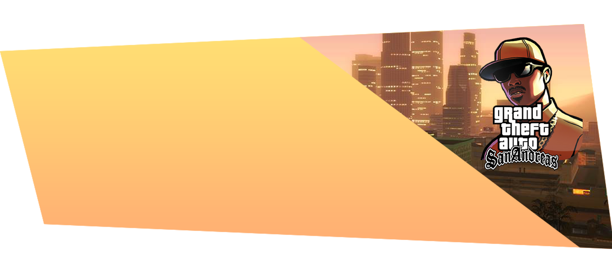

Քայլ 1
Սկսելու խաղալ մեզ հետ Grand Role Play նախագծում,
Ձեզ անհրաժեշտ կլինի Grand Theft Auto San-Andreas լեգենդար խաղը.
Խաղը պետք է լինի առանց հավելումների և որևէ փոփոխության.
Նաև ավելի հարմարավետ խաղի համար կարող եք տեղադրել մեր ModPack - ը.
Ներբեռնեք GTA San Andreas - ը
ինչպես սկսել խաղալ?
Ուզում ես մեզ հետ խաղալ Grand Role Play? Ուրեմն կատարեք
Մի քանի պարզ քայլ և վայելիր խաղը !